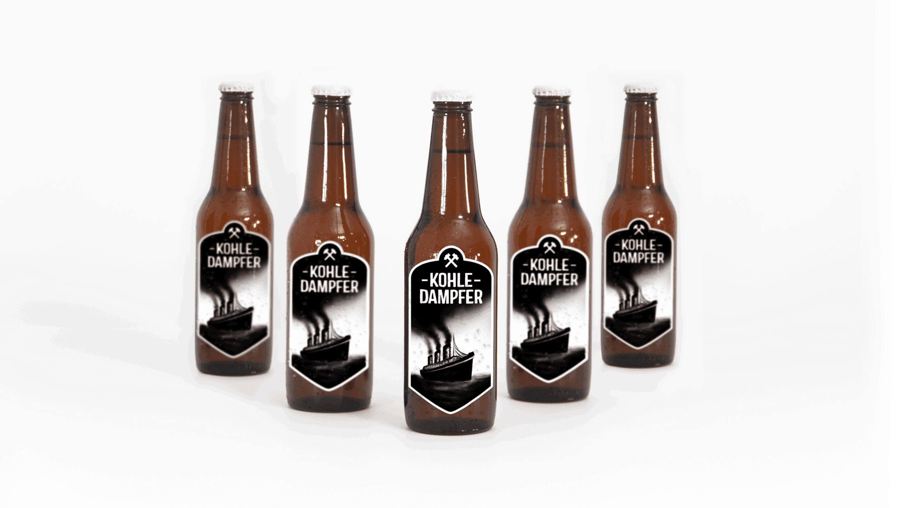

Illustration / Packaging
“Vor der Hacke ist es Duster.” (under the pickaxe, it is dark)
Coal mining is history in Germany. A tradition looking back on hundreds of years of development is coming to an end. „Kohledampfer“ is a unique beer, brewed in small circulation for the graduation project of a brewers class in Dortmund, Germany. The historic background of the region regarding the omnipresent mining industry inspired the young brewers for creating a beer that pays tribute to the miners and their struggle and keeps their memory alive. For this purpose, they created a porter - black like the coal in a mine. Mining is closely connected to seafare historically - from this, the name and motive „Kohledampfer“ (roughly translates to steamboat) derived.
For the graduation project of the brewers, I developed a label as well as a logo mark and an illustration to represent the historic background and convey the mood of a typical hard-working miner. Black as coal in a mine, the beer appears - straightforward and direct, just like the miners of the past. Cheers!